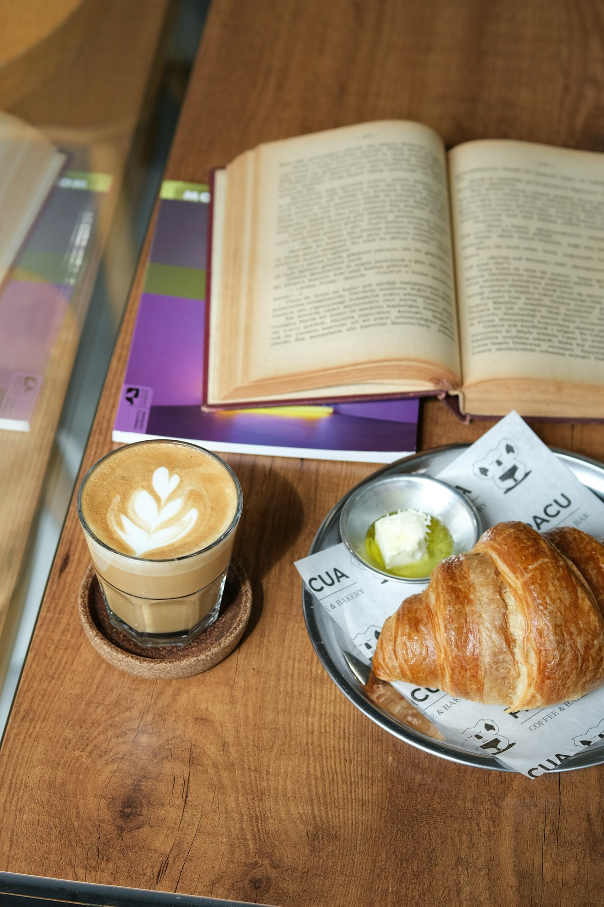

The daily ritual
House espresso
A balanced, chocolatey shot for early lectures and long afternoons.
What makes it a favorite?
Our imagined house blend is smooth enough to enjoy straight and lively enough to shine with steamed milk.
A campus café concept · made for student life
Common Table is a welcoming pause between classes: thoughtful coffee, fresh bites, and room to study, talk, or simply take a breath.
Make it your spot
Questions, club ideas, or a favorite drink we should add? We’d love to hear from you.